Metal cutting band saws
Horizontal metal cutting band saws — metal bandsaws for steel, stainless, aluminum and other metals — for fabricators, machine shops and steel service centres across Canada, in two clearly separated lines: the premium Bekamak range built in Turkey, and NovoTech's own value line. Whether you are searching for a manual band saw for metal, a semi-automatic hydraulic bandsaw, an automatic CNC band saw machine or an industrial double column saw for heavy bar and bundles, every machine is here with specifications in inches and millimetres, a CSA-approved panel, spare parts and technical support from Mississauga, ON.
- Premium line: Bekamak, Ø9″ to 59″ (230–1500 mm)
- Value line: NovoTech, Ø10″ to 23-5/8″ (250–600 mm) — semi-automatic, automatic and double-column
- Manual (Bekamak), semi-automatic, automatic and double-column saws
- Band saw buying guide, blade selection and troubleshooting chart on this page
Bekamak band saws are made in Turkey; the value line carries the NovoTech name. Every machine is sold, installed and supported in Canada by NovoTech.
Specifications checked against the manufacturer's current catalogue · page updated
NovoTech band saws
NovoTech's own brand: manufactured in China to high North American quality standards, with the same CSA-approved panel, 1-year warranty and Mississauga, ON parts and support as every machine we sell.
NovoTech value line band saw catalogue (PDF · 5 MB · imperial units) NovoTech capacity table
-
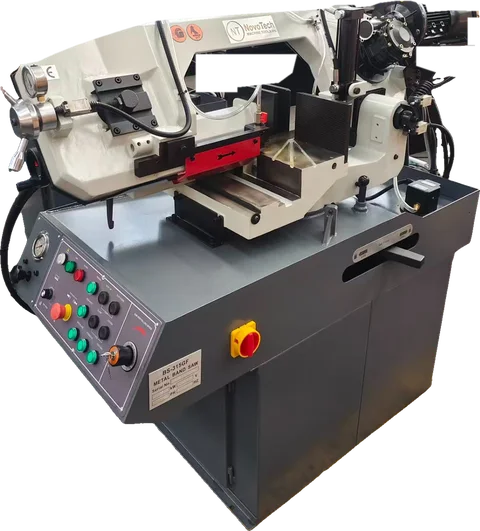
NovoTech semi-automatic band saws
Hydraulic descent, hydraulic vises and automatic bow return from Ø10″ to Ø18″ (250–460 mm), including a single-column saw with touch screen.
5 machine families · specifications and photos
-
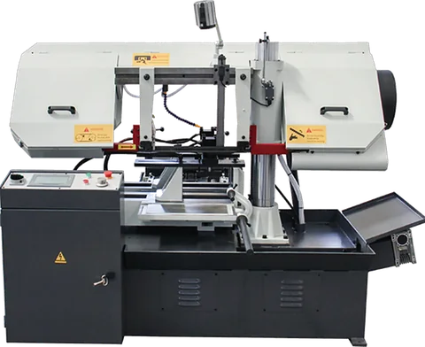
NovoTech automatic band saws
Roller-feed, shuttle-vise and CNC servo automatics from Ø11-3/4″ to Ø23-5/8″ (300–600 mm): feed, clamp, cut and count without an operator at the saw.
4 machine families · specifications and photos
-
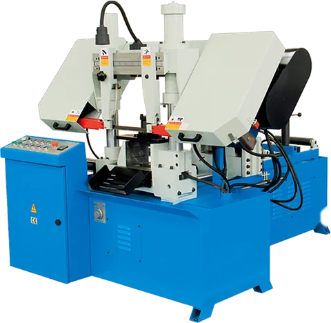
NovoTech double-column band saws
Twin-column saws from Ø11″ to Ø23-5/8″ (280–600 mm): hydraulic semi-automatics, a miter version, automatics with shuttle vise and gantry saws for plate and bundles.
3 machine families · specifications and photos
Bekamak manual band saws line-up
-
Premium line · Bekamak
BMS DG manual double-miter band saws
BMS 230DG · BMS 270DG
Round capacity Ø9″ – Ø10-5/8″ (230–270 mm)
Gravity-feed pivot band saws for the maintenance shop and light fabrication: the operator swings the bow, a hydraulic cylinder controls the descent and the head swivels both ways for miter cuts up to 60°. Variable-speed motor (two speeds standard, stepless with the inverter option), mechanical blade tensioner with microswitch, electric coolant system.
Specifications and photos
Bekamak semi-automatic band saws line-up
-
Premium line · Bekamak
BMSY DG / DGH semi-automatic dual-miter band saws
BMSY 230DG · BMSY 230DGH · BMSY 270DG · BMSY 270DGH · BMSY 320DGH · BMSY 360DGH · BMSY 360DGH ECO · BMSY 440DGH
Round capacity Ø9″ – Ø17-3/8″ (230–440 mm)
The most popular Bekamak pivot saws: automatic bow lift after every cut, with the head swivelling both ways for miters — right to 60°, left to 45°. DGH versions have a hydraulic vise; the DG versions clamp by hand. Sizes from Ø9″ (230 mm) to Ø17-3/8″ (440 mm).
Specifications and photos -
Premium line · Bekamak
BMSY 320G / 320GL semi-automatic single-miter band saws
BMSY 320G · BMSY 320GL
Round capacity Ø12-5/8″ (320 mm)
Semi-automatic Ø12-5/8″ (320 mm) saws that miter to one side up to 60°; the 320GL has a longer bow for 24″ (610 mm) wide stock at 0°.
Specifications and photos -
Premium line · Bekamak
BMSY 280–440 semi-automatic band saws
BMSY 280 · BMSY 320 · BMSY 320L · BMSY 350M · BMSY 440
Round capacity Ø11″ – Ø17-3/8″ (280–440 mm)
Straight-cutting pivot saws with hydraulic vise and automatic head lift, from Ø11″ (280 mm) to Ø17-3/8″ (440 mm); the 320L bow passes 24″ (610 mm) wide flats and the 350M bundles tube.
Specifications and photos
Bekamak automatic band saws line-up
-
Premium line · Bekamak
BMSO 350GA automatic single-miter band saw with encoder feed and NC controller
BMSO 350GA
Round capacity Ø13-3/4″ (350 mm)
Automatic saw with encoder-measured feed and an NC controller that also miters to one side up to 60° — programmed repeat cutting of angled structural parts up to Ø13-3/4″ (350 mm).
Specifications and photos -
Premium line · Bekamak
BMSO 230–440 automatic roller-feed band saws
BMSO 230 · BMSO 320 · BMSO 320L · BMSO 440
Round capacity Ø9″ – Ø17-3/8″ (230–440 mm)
Fully automatic pivot saws with roller material feed: set the length and quantity and the machine feeds, clamps, cuts and counts. Ø9″ (230 mm) to Ø17-3/8″ (440 mm), 24″ (610 mm) wide on the 320L.
Specifications and photos -
Premium line · Bekamak
BMSO E automatic band saws with encoder feed and NC controller
BMSO 230E · BMSO 320E · BMSO 350E
Round capacity Ø9″ – Ø13-3/4″ (230–350 mm)
Roller-feed automatic saws with an encoder measuring the fed length and an NC controller for programmed lengths and quantities — accurate repeat cuts from Ø9″ (230 mm) to Ø13-3/4″ (350 mm).
Specifications and photos -
Premium line · Bekamak
BMSO 270DGS motorized-feed double-miter band saw
BMSO 270DGS
Round capacity Ø10-5/8″ (270 mm)
Compact NC automatic saw that feeds with a motorized shuttle vise and miters both ways — automatic production of angled parts up to Ø10-5/8″ (270 mm).
Specifications and photos -
Premium line · Bekamak
BMSO 320GS / 320GLS servo-feed single-miter band saws
BMSO 320GS · BMSO 320GLS
Round capacity Ø12-5/8″ (320 mm)
NC automatic saws with servo-driven shuttle vise feeding and a single-miter head to 60° (set by hand on the angle scale); the GLS bow takes 24″ (610 mm) wide material.
Specifications and photos
Bekamak double-column band saws line-up
-
Premium line · Bekamak
BMSY C semi-automatic double-column band saws
BMSY 330C · BMSY 360C · BMSY 460C · BMSY 560C · BMSY 810C · BMSY 825C · BMSY 1020C
Round capacity Ø13″ – Ø40-1/8″ (330–1020 mm)
Twin-column saws for straight cutting of heavy bar, billet and bundles from Ø13″ (330 mm) to Ø40-1/8″ (1020 mm). The bow runs on two hardened columns for a rigid, square cut; hydraulic vise, automatic bow return and a 2° inclined blade are standard. SV versions have a split vise for cutting short pieces.
Specifications and photos -
Premium line · Bekamak
BMSY CGH semi-automatic single-miter double-column band saws
BMSY 325CGH · BMSY 440CGH · BMSY 540CGH · BMSY 810CGH
Round capacity Ø12-3/4″ – Ø31-7/8″ (325–810 mm)
Double-column rigidity with a head that rotates up to 60° for miter cuts on beams and heavy sections, from Ø12-3/4″ (325 mm) to Ø31-7/8″ (810 mm).
Specifications and photos -
Premium line · Bekamak
BMSY DG NC semi-automatic twin-miter double-column band saws
BMSY 360CDGH · BMSY 440CDGH · BMSY 560DG · BMSY 650DG · BMSY 750DG
Round capacity Ø14-1/8″ – Ø29-1/2″ (360–750 mm)
Heavy double-column miter saws whose head swivels both ways; on the 650DG and 750DG NC versions the operator enters the angle and the saw positions itself. Ø14-1/8″ (360 mm) to Ø29-1/2″ (750 mm).
Specifications and photos -
Premium line · Bekamak
BMSO C automatic roller-feed double-column band saws
BMSO 330C · BMSO 460C · BMSO 560C · BMSO 825C
Round capacity Ø13″ – Ø35-3/8″ (330–900 mm)
Automatic straight-cutting double-column saws with roller material feed and piece counting, from Ø13″ (330 mm) up to the 825C.
Specifications and photos -
Premium line · Bekamak
BMSO CS NC fully automatic servo-feed double-column band saws
BMSO 330CS · BMSO 420CS · BMSO 560CS · BMSO 570CS · BMSO 820CS · BMSO 1110CS
Round capacity Ø13″ – Ø43-3/4″ (330–1110 mm)
Production saws with ball-screw servo shuttle-vise feeding and PLC touch-screen control: job lists of length and quantity run unattended with ±0.1 mm repeatability. Ø13″ (330 mm) to Ø43-3/4″ (1110 mm).
Specifications and photos -
Premium line · Bekamak
BMSO CGS / CDGS NC automatic miter double-column band saws
BMSO 325CGS · BMSO 440CGS · BMSO 540CGS · BMSO 440CDGS
Round capacity Ø12-3/4″ – Ø21-1/4″ (325–540 mm)
Servo-feed automatic double-column saws with a miter head and digital angle display — single miter on the CGS, both sides on the CDGS — for unattended cutting of angled parts up to Ø21-1/4″ (540 mm).
Specifications and photos -
Premium line · Bekamak
BMSO XS high-tech production band saws
BMSO 335XS · BMSO 420XS · BMSO 570XS · BMSO 660XS · BMSO 825XS
Round capacity Ø13-1/4″ – Ø32-1/2″ (335–825 mm)
Bekamak's top production line: servo bow feed and servo material feed, full enclosure and CNC control for carbide blades and the shortest cycle times. Ø13-1/4″ (335 mm) to Ø32-1/2″ (825 mm).
Specifications and photos -
Premium line · Bekamak
BMSY 1110C–1515C heavy-duty band saws
BMSY 1110C · BMSY 1113C · BMSY 1122C · BMSY 1313C · BMSY 1515C
Round capacity Ø43-1/4″ – Ø59″ (1100–1500 mm)
Large semi-automatic saws for forging shops, steel service centres and mould makers — blocks and bundles up to 59″ (1500 mm) wide on a massive welded body with a reinforced bow.
Specifications and photos
NovoTech semi-automatic band saws line-up
-
Value line · NovoTech
BS-315GF full-hydraulic double-miter band saw, 10″
BS-315GF
Round capacity Ø10″ (250 mm)
Our most popular value-line saw: a 10-inch gear-driven semi-automatic with everything hydraulic — the vise clamps hydraulically, the bow descends on a hydraulic cylinder at a dialled-in feed rate and lifts itself hydraulically at the end of the cut. The bow swivels to both sides for 30°, 45° and 60° miters with fast angle stops, the gear-driven motor runs the band at a variable blade speed set on the VFD inverter drive. One operator loads, clamps and starts; the saw does the rest.
Specifications and photos -
Value line · NovoTech
BS-460G dual-miter hydraulic band saws, 13″
BS-460G · BS-460G-JC
Round capacity Ø13″ (330 mm)
A 13-inch gear-driven semi-automatic saw whose bow swivels both ways — 45° left and right, 60° right — with a quick lock at every angle. Hydraulic vise, hydraulic descent and a gear-driven motor with variable blade speed by VFD inverter drive make it the workhorse for structural steel, tube and profile cutting. The BS-460G-JC is the same machine with a movable control panel on an arm.
Specifications and photos -
Value line · NovoTech
BS-2114TH hydraulic band saw, 15-3/4″
BS-2114TH
Round capacity Ø15-3/4″ (400 mm)
A 15-3/4-inch pivot saw with hydraulic descent and return: the saw frame descends and rises automatically, so one operator can clamp, start and walk away. Gear-driven motor with variable blade speed by VFD inverter drive, sintered-carbide guides, quick-clamp sliding vise and miter cuts up to 60° on stock up to 21-3/4″ × 14-1/4″.
Specifications and photos -
Value line · NovoTech
BS-650GA hydraulic swivel-head band saw, 18″
BS-650GA
Round capacity Ø18-1/8″ (460 mm)
An 18-inch swivel-head saw with automatic cutting and manual feeding: hydraulic vise, variable-frequency drive for stepless blade speed, a digital read-out for the feed position and a movable control panel. The bow swivels 45° to both sides and 60° to the right, and the gear-driven 7.4 HP motor handles 25-1/2″ × 13-3/4″ sections. Same frame as the automatic BS-650G without the feeder.
Specifications and photos -
Value line · NovoTech
BS-5030 single-column band saw with touch screen
BS-5030
Round capacity Ø11-3/4″ (300 mm)
A single-column saw for straight cuts up to Ø11-3/4″ / 19-3/4″ × 11-3/4″ with a PLC and finger-touch screen, hydraulic jaw vise, variable hydraulic down-feed and blade overload protection. The column guides the bow vertically for square, repeatable cuts; bearing and carbide double guides extend blade life. Ideal as a production saw for bar and plate where a feeder is not needed — its automatic sister is the BS-5040.
Specifications and photos
NovoTech automatic band saws line-up
-
Value line · NovoTech
BS300x370 automatic band saws with roller feed, 11-3/4″
BS300x370 · BS300x370H
Round capacity Ø11-3/4″ (300 mm)
Compact automatic saws for batch cutting of bar, tube and profile up to Ø11-3/4″: a powered roller feed advances the stock, the hydraulic vise clamps, the bow cuts and returns, and the cycle repeats for the programmed count. Stepless blade speed from an inverter, gear drive and a 3 HP motor. The BS300x370H adds an automatic miter head for angle cuts of 30°, 45° and 60°.
Specifications and photos -
Value line · NovoTech
BS-5040 single-column automatic band saw
BS-5040
Round capacity Ø11-3/4″ (300 mm)
The automatic version of the single-column saw: a hydraulic shuttle vise feeds up to 19-3/4″ (500 mm) per stroke, a batch clamping device holds bundles, and an automatic chip conveyor clears the swarf. PLC control with touch screen, hydraulic jaw vise, variable hydraulic down-feed, rapid descent until the blade touches the work and blade overload protection.
Specifications and photos -
Value line · NovoTech
BS-460GB automatic swivel-head miter band saw with 20 ft stand
BS-460GB
Round capacity Ø13″ (330 mm)
The automatic version of the BS-460G: PLC-controlled feeding and clamping with a shuttle vise (19-3/4″ per stroke), feed length selectable in inches or millimetres, and a 20 ft (6 m) material stand — 10 ft feed and 10 ft return — delivered with the machine. The bow still swivels to both sides for miter cuts, and a guard net protects the operator. Gear drive with variable blade speed by VFD inverter drive.
Specifications and photos -
Value line · NovoTech
BS-500G to BS-850G CNC automatic band saws
BS-500G · BS-500GT · BS-650G · BS-850G
Round capacity Ø13-3/4″ – Ø23-5/8″ (350–600 mm)
Production saws with CNC feeding and cutting: a servo-driven feeder positions the stock, hydraulic vises clamp it, the servo blade drive sets a stepless cutting speed and the PLC runs the batch. The BS-500G and BS-500GT have an automatic rotary bow (45°) and chip extraction; the BS-650G feeds up to 25-1/2″ per stroke with a linear scale on the feed and a swivelling control panel; the BS-850G cuts 33-1/2″ × 23-5/8″ sections with a hydraulic feeder as standard.
Specifications and photos
NovoTech double-column band saws line-up
-
Value line · NovoTech
TBK-4228 series double column band saws, 11″
TBK-4228 · TBK-4228A · TBK-4228B · TBK-4228B (improved)
Round capacity Ø11″ (280 mm)
Twin-column saws for Ø11″ / 11″ × 11″ stock: the bow travels vertically on two columns, so the cut stays square whatever the feed pressure. Hydraulic down-feed with variable speed, hydraulic clamping and automatic shut-off on every model. Choose the base machine with hand-wheel feed (TBK-4228), the miter version that cuts at 30° and 45° (TBK-4228A), the automatic with a 3-position shuttle vise (TBK-4228B) or the automatic with stepless blade speed, chip conveyor and the new vise design (TBK-4228B (improved)).
Specifications and photos -
Value line · NovoTech
TGK-4235 and TGK-4240 gear-driven double column saws
TGK-4235 · TGK-4240
Round capacity Ø13-3/4″ – Ø15-3/4″ (350–400 mm)
Heavier twin-column saws with a gear-driven motor and variable blade speed by VFD inverter drive, hydraulic blade tensioning and hydraulic clamping. Vertical lifting on two columns keeps the blade square in Ø13-3/4″ and Ø15-3/4″ solids; the cutting feed is hydraulically controlled and stepless. A three-position hydraulic clamping vise for bundles is optional.
Specifications and photos -
Value line · NovoTech
GZ4250/70 and GZ4260/120 gantry double column saws
GZ4250/70 · GZ4260/120
Round capacity Ø19-5/8″ – Ø23-5/8″ (500–600 mm)
Gantry-type double column saws for heavy plate, blocks, bundles and large tube: Ø19-3/4″ / 27-1/2″ × 19-3/4″ on the GZ4250/70 and Ø23-5/8″ / 47-1/4″ × 23-5/8″ on the GZ4260/120. Hydraulic clamping, stepless blade speed and a powered roller table; the GZ4260/120 adds hydraulic blade tensioning and a 15 HP motor for the 2-5/8″ blade.
Specifications and photos
The range at a glance
Capacity at 0° for every model, one table per line. Each row links to the full specification table with miter capacities, blade sizes, motors and dimensions.
Value line NovoTech band saws — capacity at 0°
| Model | Type | Round at 0° | Rectangular at 0° | Main motor | Weight |
|---|---|---|---|---|---|
| BS-315GFBS-315GF | Semi-automatic | Ø10″ (250 mm) | 12-3/8″ × 7-1/2″ (315 × 190 mm) | 1.5 HP (1.1 kW) | 882 lb (400 kg) |
| BS-460GBS-460G saws | Semi-automatic | Ø13″ (330 mm) | 18-1/8″ × 9-7/8″ (460 × 250 mm) | 3 HP (2.2 kW) | 1,984 lb (900 kg) |
| BS-460G-JCBS-460G saws | Semi-automatic | Ø13″ (330 mm) | 18-1/8″ × 9-7/8″ (460 × 250 mm) | 3 HP (2.2 kW) | 1,984 lb (900 kg) |
| BS-2114THBS-2114TH | Semi-automatic | Ø15-3/4″ (400 mm) | 21-5/8″ × 14-1/8″ (550 × 360 mm) | 3.8 HP (2.8 kW) | 1,389 lb (630 kg) |
| BS-650GABS-650GA | Semi-automatic | Ø18-1/8″ (460 mm) | 25-5/8″ × 13-3/4″ (650 × 350 mm) | 7.4 HP (5.5 kW) | 3,616 lb (1640 kg) |
| BS-5030BS-5030 | Semi-automatic | Ø11-3/4″ (300 mm) | 19-5/8″ × 11-3/4″ (500 × 300 mm) | 4 HP (3 kW) | 2,392 lb (1085 kg) |
| BS300x370BS300x370 automatic saws | Automatic | Ø11-3/4″ (300 mm) | 14-5/8″ × 11″ (370 × 280 mm) | 3 HP (2.2 kW) | 1,764 lb (800 kg) |
| BS300x370HBS300x370 automatic saws | Automatic | Ø11-3/4″ (300 mm) | 14-5/8″ × 11″ (370 × 280 mm) | 3 HP (2.2 kW) | 2,072 lb (940 kg) |
| BS-5040BS-5040 | Automatic | Ø11-3/4″ (300 mm) | 19-5/8″ × 11-3/4″ (500 × 300 mm) | 4 HP (3 kW) | 3,417 lb (1550 kg) |
| BS-460GBBS-460GB | Automatic | Ø13″ (330 mm) | 18-1/8″ × 9-7/8″ (460 × 250 mm) | 3 HP (2.2 kW) | 3,351 lb (1520 kg) |
| BS-500GBS-500G–850G CNC saws | Automatic | Ø13-3/4″ (350 mm) | 19-5/8″ × 13-3/4″ (500 × 350 mm) | 5 HP (3.7 kW) | 5,952 lb (2700 kg) |
| BS-500GTBS-500G–850G CNC saws | Automatic | Ø16-3/8″ (415 mm) | 19-5/8″ × 16-3/8″ (500 × 415 mm) | 5 HP (3.7 kW) | 6,129 lb (2780 kg) |
| BS-650GBS-500G–850G CNC saws | Automatic | Ø18-1/8″ (460 mm) | 25-5/8″ × 13-3/4″ (650 × 350 mm) | 7.4 HP (5.5 kW) | 5,357 lb (2430 kg) |
| BS-850GBS-500G–850G CNC saws | Automatic | Ø23-5/8″ (600 mm) | 33-1/2″ × 23-5/8″ (850 × 600 mm) | 7.4 HP (5.5 kW) | 8,697 lb (3945 kg) |
| TBK-4228TBK-4228 saws | Double-column | Ø11″ (280 mm) | 11″ × 11″ (280 × 280 mm) | 4 HP (3 kW) | 1,532 lb (695 kg) |
| TBK-4228ATBK-4228 saws | Double-column | Ø11″ (280 mm) | 11″ × 11″ (280 × 280 mm) | 4 HP (3 kW) | 1,808 lb (820 kg) |
| TBK-4228BTBK-4228 saws | Double-column | Ø11″ (280 mm) | 11″ × 11″ (280 × 280 mm) | 4 HP (3 kW) | 2,183 lb (990 kg) |
| TBK-4228B (improved)TBK-4228 saws | Double-column | Ø11″ (280 mm) | 11″ × 11″ (280 × 280 mm) | 4 HP (3 kW) | 2,183 lb (990 kg) |
| TGK-4235TGK-4235 / 4240 | Double-column | Ø13-3/4″ (350 mm) | 13-3/4″ × 13-3/4″ (350 × 350 mm) | 3.8 HP (2.8 kW) | 1,940 lb (880 kg) |
| TGK-4240TGK-4235 / 4240 | Double-column | Ø15-3/4″ (400 mm) | 15-3/4″ × 15-3/4″ (400 × 400 mm) | 5.4 HP (4 kW) | 2,921 lb (1325 kg) |
| GZ4250/70GZ4250/70 / GZ4260/120 | Double-column | Ø19-5/8″ (500 mm) | 27-1/2″ × 19-5/8″ (700 × 500 mm) | 7.4 HP (5.5 kW) | 5,710 lb (2590 kg) |
| GZ4260/120GZ4250/70 / GZ4260/120 | Double-column | Ø23-5/8″ (600 mm) | 47-1/4″ × 23-5/8″ (1200 × 600 mm) | 14.8 HP (11 kW) | 11,155 lb (5060 kg) |
Round and rectangular capacities are the maximum stock the saw passes at 0°; see each model's table for miter capacities. Imperial values are converted from the manufacturers' metric data and rounded to 1/8 in.
Included with every machine from NovoTech
- CSA-approved electrical panelEvery machine ships with a CSA-approved panel, wired for Canadian voltage.
- Parts and support in CanadaSpare parts and technical support readily available from Mississauga, ON.
- 7-day money-back guaranteeTry the machine in your shop — full refund within 7 days on in-stock models.
- 1-year warrantyOn every new machine we sell, with parts and service from Mississauga, ON.
- Two lines, one standard of supportBekamak saws are built in Turkey with European components; value-line saws in China to North American standards.
- Installation and trainingOur technicians commission the machine and train your operators, anywhere in Canada — on request, at an additional charge.
- Remote troubleshooting by video callOur technicians diagnose faults and guide your operator through the fix over a video call.
- Shipping across Canada from Mississauga, ONDelivered to every province and territory, with the freight arranged by NovoTech at competitive rates.
- Financing with 0% downLease or finance the machine with 0% down and competitive rates through our financing partners — keep your cash working in the shop.
- Order today with 10% downSimple payment terms: 10% down payment to place your order, the remaining 90% before shipping from our warehouse in Mississauga, ON.
- 5% off your second machineReturning customers get 5% off their next machine from NovoTech — our thank-you for coming back.
Three-phase machines are supplied for 600 V; 208 V, 240 V or 480 V 3-phase available on request.
Inside the factory — where the saws are built
A tour of the Bekamak plant in Turkey, where the premium-line band saws on these pages are engineered and built. More videos are on NovoTech's YouTube playlist.
Metal band saw buying guide
Everything we explain to customers before they buy a band saw: how horizontal saws work, pivot versus double-column, manual versus automatic, blade selection, speeds and feeds, and a troubleshooting chart. Written by NovoTech's technicians from years of installing and servicing band saws in Canada.
What is a band saw machine?
A bandsawis a power saw with a long, sharp blade consisting of a continuous band of toothed metal stretched between two wheels to cut material. They are used principally in woodworking, metalworking, and lumbering, but may cut a variety of materials. Advantages include uniform cutting action as a result of an evenly distributed tooth load. Most bandsawshave two wheels rotating in the same plane, one of which is powered. The blade itself can come in a variety of sizes and tooth pitches (teeth per inch, or TPI), which enables the machine to be highly versatile and able to cut a wide variety of materials including wood, metal and plastic.
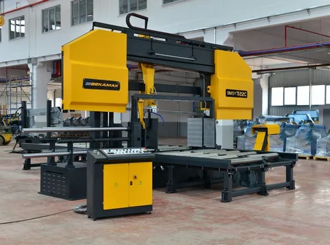
Metal cutting bandsaws
Bandsawsdedicated to industrial metal-cutting use, such as for structural steel in fabrication shops and for bar stock in machine shops, are available in vertical and horizontal designs. Typical band speeds range from 65 ft/min to 330 ft/min although specialized bandsaws are built for friction cutting of hard metals and run band speeds of 15,000 ft/min (76 m/s). Metal-cutting bandsaws are usually equipped with brushes or brush wheels to prevent chips from becoming stuck in between the blade's teeth. Systems which cool the blade with cutting fluid are also common equipment on metal-cutting bandsaws. The coolant washes away swarf and keeps the blade cool and lubricated.
Band saws are classified based on the orientation of the cut.
A vertical bandsaw, also called a contour saw, keeps the blade's path stationary while the workpiece is moved across it. This type of saw can be used to cut out complex shapes and angles and contouring. The part may be fed into the blade manually or with a power assist mechanism. This type of metal-cutting bandsaw is often equipped with a built-in blade welder. This not only allows the operator to repair broken blades or fabricate new blades quickly, but also allows for the blade to be purposely cut, routed through the center of a part, and re-welded in order to make interior cuts. These saws are often fitted with a built-in air blower to cool the blade and to blow chips away from the cut area giving the operator a clear view of the work. This type of saw is also built in a woodworking version. The woodworking type is generally of much lighter construction and does not incorporate a power feed mechanism, coolant, or welder.
Horizontal bandsaws hold the workpiece stationary while the blade swings down through the cut. This configuration is used to cut long materials such as pipe or bar stock to length. Thus, it is an important part of the facilities in most machine shops. Smallhorizontal bandsaws typically employ a gravity feed alone, retarded to an adjustable degree by a coil spring; on industrial models, the rate of descent is usually controlled by a hydraulic cylinder that bleeds through an adjustable valve. When the saw is set up for a cut, the operator raises the saw, positions the material to be cut underneath the blade, and then turns on the saw. The blade slowly descends into the material, cutting it as the band blade moves. When the cut is complete, a switch is tripped and the saw automatically turns off. Band saws use a continuous saw blade. Chip removal is rapid, because each tooth is a precision cutting tool and accuracy can be held to close tolerances eliminating or minimizing many secondary machining operations.
The horizontal bandsawis operated hydraulically by controls on a control box, which is located on the front side of the machine. A motor and pump assembly supplies hydraulic fluid from a reservoir in the base to a cylinder, which raises and lowers the support arm and also controls the feed pressure and band tension. A speed and feed chart are sometimes provided on the machine, but when it is not, consult the operator's manual for the proper settings for sawing. More sophisticated versions of this type of saw are partially or entirely automated (via PLC or CNC) for high-volume cutting of machining blanks. Such machines provide a stream of cutting fluid recirculated from a sump, in the same manner that a CNC machining center does. The coolant cools the saw band and also washes away chips from the cut before they can clog the band. Two band guides use rollers to twist the band so that the teeth are in the proper cutting position. The guides are adjustable and should be adjusted so that they are just slightly further apart than the width of the material to be cut. This will give maximum support to the saw band and help assure a straight cut.
What to Look for When Buying A Metal Cutting Bandsaw?
Before you jump straight in and buy, it’s best to think about your needs and requirements. If you can put a list together, this will certainly narrow down the selection of bandsawsavailable.
What are the Key Features to Look For? Depending on the size of the machine and the tasks you need to perform you may only be looking for one or two of these features, but here is a list of the key ones we think you need to look for…
Size
bandsaws come in sizes ranging from 7”- 80” with model numbers correlating to their max capacity in millimeters when cutting at 90°. E.g. an OSA 300 will fit Ø300 mm round bar stock. Larger capacity saws generally have larger motors providing more torque and allowing the operator to cut faster, not just larger, and to increase the speed at which the blade can get through the material. But as size increases, so do prices. How big is big enough? That all depends.
What size and type of material are you cutting on a day to day basis? We typically recommend getting 1-2” more clearance than your most commonly cut material. This allows you to squeeze in those one-off cuts but keeps you from buying more machine than you need.
Pivot bandsaws (scissor style)
as the name implies, pivot on a bearing on one side of the head, similar to a pair of scissors. In a pivoting scissor head machine, the blade enters the material at an angle and traces the circumference of the material being cut, which results in a longer cutting cycle. The down feed pressure on a pivoting head will be greatest closer to pivot point and will lessen as you get farther away. On structural shapes such as I beam or square tubing, the pivot saw will produce a better cut as the blade wanders less when it enters these materials at the more severe angle provided by the scissor head. Scissor type bandsaws tend to require a smaller investment than their dual column cousins; they are typically a good fit for smaller job shops or as back up or one-off machines for production facilities.
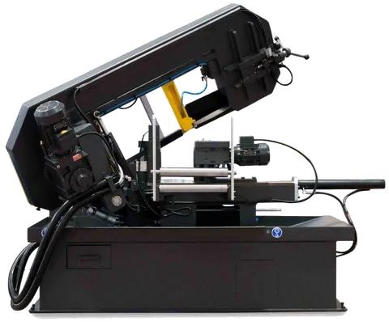
Dual column band saws
have a pair of large columns, one on either side of the work, for very high rigidity and precision. Dual column machines raise and lower the head on precision ground linear guides. With dual column bandsaws, the blade enters the material at an angle, typically smaller than the scissor style machines, but cuts along the diameter of the material. Dual column saws are much more rigid than their pivoting counterparts due to the dual columns holding both ends of the head, resulting in near constant down feed pressure and feed speed across the entire width of the cut. This rigidity also reduces vibration, resulting in a better cut quality and a longer blade life. Dual column sawblades also take the shortest route through the material, decreasing the time required per cut and increasing production numbers. While dual column machines produce better cuts faster, they also tend to have heavier price tags. However, the increased cost can be quickly recovered by the increase in production numbers. This larger investment usually makes sense for more demanding production lines working with larger materials. For the metalworking industry, the double-column band saw is the most common machine type in the band saw inventory.
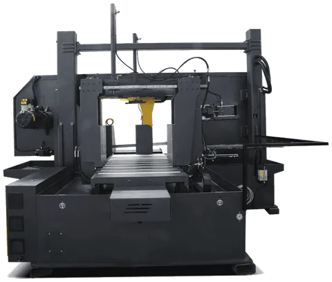
Manually operated bandsaw machines
Gravity feed saws fall under their own weight. Most such saws have a method to allow the cutting force to be adjusted, such as a movable counterbalancing weight, a coil spring with a screw-thread adjustment, or a hydraulic or pneumatic damper (speed control valve). The latter does not force the blade downwards, but rather simply limits the speed at which the saw can fall, preventing excessive feed on thin or soft parts. This is analogous to door closer hardware whose damping action keeps the door from slamming. Gravity feed designs are common in small saws. Manual bandsaws require the operator to lift the head after each cut.
Compared with hydraulic feed, gravity feed is more cost-effective.
Semi-automatic band saw machines
A semi-automatic saw will make one cut, raise the blade back up out of the material and stop. The material must then be repositioned by the operator in order to make another cut. head movement is controlled by a hydraulic piston, and can be raised and lowered by the operator activating the up/down switch. To run the machine, the operator tightens material in the vice and pushes the Start button. The saw will make the cut, then lift the head back to the upper position. Semi-automatic saws are a good fit if you need to make a few cuts in a length of material.
Fully automatic band saw machines
An automatic saw will continue to automatically feed material and make cuts according to a specific program, until the job is complete or the saw runs out of material. The automatic band saw has functions of preset feeding rate, returning, falling, part feeding, and clamping. Take advantage of these modern functions in a production environment. Under such machine conditions, if one equipment operator is assigned to each saw, it will not be practical. Modern band saw tasks require that each operator can feed and unload many automatic band saw machines. Due to its CNC controlled function, the automatic band saw not only has faster cutting speed, but also has higher precision. A well-made CNC band saw machine is composed of several key elements, including falling mechanism, feeding mechanism and automatic saw. Some CNC band saws employ a leadscrew and servo motor to feed the saw.
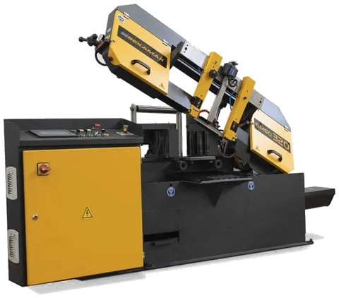
Fully automatic horizontal bandsaw operation is as follows
1. Material is placed into the roller vice and the vice is tightened
2. The operator sets the desired cut length, typically measured by a limit switch or encoder
3. The number of desired parts is entered into the controller
4. The operator presses the Start button
5. The saw will make the cut and the part will fall out of the back of the machine and into the parts collection bin.
6. The machine raises the head and the material is advanced until the next set length
7. The cycle continues until the numbers of cuts entered into the control is reached
There are three things that will stop a fully automatic saw cycle. The first is completing the job. The second is running out of material. When this happens, most saws will pause and wait for more material to be added, then complete the cycle. The final is if the bandsaw blade breaks. (All saws feature auto blade-breakage detection.)
Fully automatic saws are best suited for production lines which need to cut multiple pieces to the same length.
Feeding mechanism in fully automatic band saw machines
Shuttle-vice: one of your options for advancing material through a horizontal bandsaw is ashuttle-vice style. Shuttle vices work by the vice head moving away from the saw blade, clamping around the material, and pulling the material forward to be cut. Shuttle vicesare the best option when bundle cutting, as they are typically stronger and much accurate than their roller-style counterparts, enabling larger, heavier materials to be moved, and prevent slippage within the bundle.
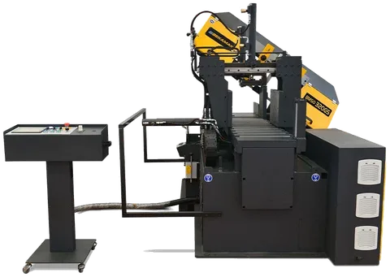
Powered roller: The standard vice on fully automatic saws tends to be the powered roller style, which holds 3-5 cylinders vertically against each side of the material. One side is grooved, to assist with catching and advancing the material, and the other is smooth, containing a limit switch activated by the pressure of the material inside the vice. Compared with shuttle vice, powered roller is more cost-effective.
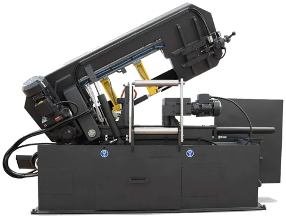
Miter or Dual Miter Cutting
Having this ability is what makes bandsawsstand out over powered hacksaws. A lot of processing, especially in the fabrication workshop will need to be angles and therefore miter cutting is a necessity. Not just having miter cutting, but accurate miter cutting with a precise scale. For some fabrication projects, miter cutswill help to give you a more professional product, but when you’re trying to cut corners, miteringis the only way to go. There are assortment of horizontal mitering bandsaws, with options for a swiveling head or a swiveling vice, each combined with either a scissor type or dual column set up and offered in fully or semi-automatic.
Single mitering band saw can cut at an angle (aka to miter) in the positive direction (+30°, +45°, etc.) ; Dual miter cutting is another great feature to have, especially good for workshops that have a multitude of cuts to do on non-symmetrical material.
dual mitering band saw can cut in both the positive AND negative direction (+60°, +45°, +30° -30°, -45°, etc.).
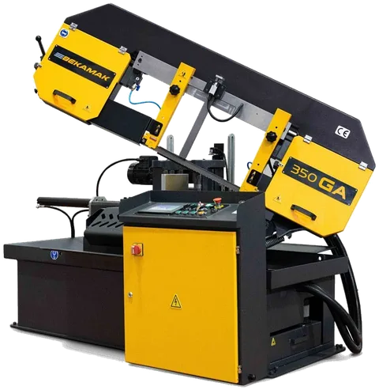
Swiveling head vs. swiveling vice
With a swiveling head the material is fed into the vice perpendicular to the machine base and the entire blade and housing can be moved to set and cut the desired angle. What is the advantage to this? Production lines can be set up with minimal clearance as the material will always move in a straight line. Disadvantages to this? Price. Enabling a saw head to rotate requires a larger, stronger frame. This increases the price of the machine. However, if you are making a lot of unique miter cuts in a shop with limited space, a swiveling head is worth the investment.
A swiveling vice will clamp your material at the angle you wish to cut, requiring additional space around the machine for the material to extend. The saw blade and housing do not rotate, the positioning of the vice (and as such the material in the vice) dictates the angle at which the material is cut. If mitering is something that is not needed on a regular basis and you have the room to move your material, then a swiveling vice is most likely the way to go, as they typically require a smaller investment.
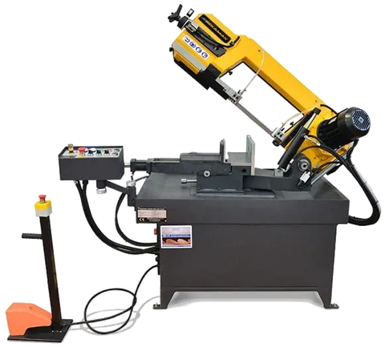
Hydraulic top clamp
The hydraulic top clamp allows the operator to easily, with minimal tack-welding of the ends or strapping, cut multiple pieces of material by applying pressure in 2 directions simultaneously to ensure a clean and complete cut.
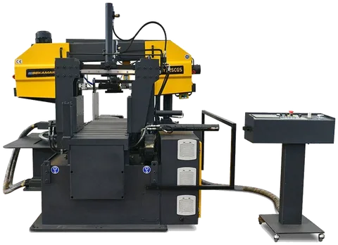
Bundle cutting
To get blanks on the floor faster, shops use bandsaws to cut several square, rectangular or round solid bars or tubes at a time. Bandsaws have a fairly large work envelope that allows materials to be stacked and cut. It’s about efficiency and generating a high volume of parts in a short period of time. But if a shop is going to be cutting a high volume of bundlesfor a specific job, it will need a dedicated bandsaw.
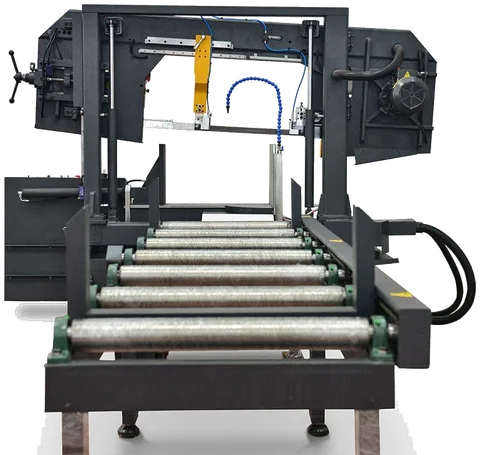
Bundle cutting is generally done with an automatic or semiautomatic dual column or scissor-type bandsaw with V jaws or shuttle vice.
To cut tubing on single- or dual-column horizontal bandsaws—and some vertical ones—the machine needs a canted head, meaning it is mounted at a slight angle, producing the same effect as angling the workpiece. The bandsaw blade passes through the tube at an angle, improving the consistency of the cut and increasing blade life.
With horizontal machines, the blade is offset anywhere from 3 to 5 percent. The blade does not come in perfectly parallel with the material, and this helps eliminate tooth strippage. This is done more for tubing, where you have interrupted cuts.
To minimize movement and vibration, workpieces must be tightly secured. In addition to the side vises already on the bandsaw, the most effective method to hold material in place is to use a top clamp, commonly referred to as a bundle cutting attachment, an option on most production bandsaws. The side vises maintain the position of the material and the top clamp applies down pressure, keeping an individual piece from popping up and out from the bundle.
For bundle cutting, the most effective cuts are those made in solid bars using bi-metal blades. When blades continuously cut solid material, stresses on the teeth after initial impact tend to be consistent. Bundle cutting solid materials is like cutting one big workpiece.
Variable blade Speed
Different materials will require different speeds for optimum cutting. Some machines may come with a belt drive with three or four speeds which are good, but a variable speed is definitely preferable. Not only will this give you easy speed changing, but also great flexibility of use over many materials. With the overall benefit of making your blades last much longer.
Most band saw machines come with variable blade speeds
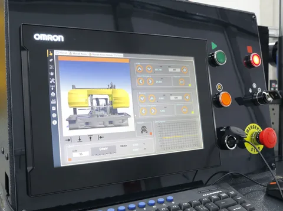
Swarf auger
If you plan to run your saw continuously a chip conveyor will ensure your chip chute doesn’t overflow, reducing downtime, saving money. The chip auger especially helps to move larger, heavier chips (e.g. cutting iron with a large tooth blade), which might otherwise sink to the bottom of the chute and not be flushed to the coolant collector. Running your saw 8+ hours a day, every day? You need this.
Band tensioning
Bandsaw blades require tension and lots of it to consistently produce straight, uniform cuts, especially in thick or dense stock. Blade “tension” is a technical description of how tight the bandsaw blade is. Bandsaw blades are tensioned by the amount of force per cross-sectional area of the blade, expressed as PSI. Two blades of different sizes will require different forces to achieve the same PSI.
Band tensioner is a closed hydraulic system, manually or hydraulic actuated controls the saw blade tension.
in case of blade breakage; Blade tensioner instantly stops rotation of the saw blade wheel, shuts off the motor drive, and prevents restarting of the motor until a new blade is installed and tension is applied thereto.
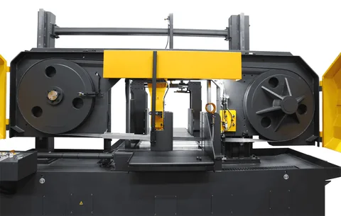
Manual blade tensioner: most machines include a manual blade tensioner and gauge to read and set the blade tension manually.
Hydraulic blade tensioner: Temperature change due to friction can change blade length and tension while cutting parts.
you can choose to have hydraulic band tensioner on your machine to Ensures blade is always at optimum tension. by mean of hydraulic cylinder and pressure switch connected to a PLC controller, machine automatically keeps its blade tension constant in cutting process.
Variable pressure Hydraulic vise
Hydraulic vise provides easy setup compare to manual vise.
Some machines have a gauge to check the vise pressure and a valve to adjust it.
If the clamping pressure is adjustable, use the maximum pressure for solid stock and enough pressure to clamp thin walled structural without deforming them.
Sensitive down feed control
The saw fed by a hydraulic cylinder could be regulated by a sensitive feed control valve depending on the material characteristics. The benefits: Higher cutting output, longer blade life, low-vibration cutting, constant chip removal.
Blade slippage sensor
This sensor detects blade slippage in case blade stuck in the workpiece or blade tension is not enough. in case of band slippage on wheels; sensor instantly shuts off the motor drive to avoid damages to the blade and wheels.
Quick approach sensor
This optical sensor detects workpiece height so blade approaches to workpiece quickly; then decrease feed speed in order to cut material. this feature increase productivity of band saw.
Another option is mechanical workpiece height detector which adjust up lift height of band according to workpiece diameter. this feature avoids blade idle up lift in repeat cut and increases efficiency significantly.
Blade deviation sensor
Blade deviation sensor and control system is designed to sense and control saw blade deviation. A pair of spaced proximity inductive sensors is positioned adjacent to a side of the saw blade in order to detect blade deviation during operation. controller receives input from each of the pair of sensors in order to control and adjust band tension on the blade and adjust blade force on the work piece.
Hydraulic carbide guide
Hydraulically controlled carbide guides are actuated when the machine’s hydraulic system is started to ensure rigid blade guide clamping for accurate cuts
Infeed Roller Tables and powered Roller Conveyors
Another great accessory especially for the larger workshop are roller stands. When cutting stock, these provide a stable structure that supports the weight of the material, whilst also making it easy to feed it into the vice.
A little push goes a long way! While they cannot initiate movement, the rollersgreatly ease material movement.
Motor driven roller conveyors are recommended for use in conjunction with hydraulic top clamps and shuttle vices in fully automatic horizontal bandsaws. Using a small but powerful motor, the tables help the shuttle vice to move heavy materials into position to be cut. The combination of shuttle vice, hydraulic top clamp, and motor driven roller conveyor results in a machine made for mass production with minimal hands-on time.
bundling infeed table helps you stack material easily in order to bundle cutting
Rigid Construction
As with most engineering machinery, solid steel and cast-iron construction are very important. This is so the machine can withstand the cutting forces put on it, as well as giving it vibration dampening qualities that will aid the accuracy of the cut.
Band saw blades selection
Choosing the right blade for the material to be cut plays an important role in cost effective band sawing. Here are some guidelines to help you make the right decision.
There are 3 main types of band saw blades: Bi-Metal, Carbon Steel, and Carbide.
Bi-Metal Saw Blades
Bi-metal band saw blades cover the broadest range of sawing applications. 95% of companies and individuals cutting the following materials should use a bi-metal band saw blade: carbon steel, tool steel, structural steel, stainless steel, pipes/tubing, die steel, angles, flat stock and mixed metal applications. Bimetal blades with high speed steel teeth, including cobalt grades, are now the norm. The development of new tooth geometries and tooth pitches has produced increased production rates and greater blade life. New materials and processes such as M51 steel and the cryogenic treatment of blades have produced results that were thought impossible just a few years ago
Carbon Steel Saw Blades
carbon steel blade will cut the following: mild steels, copper, wood, plastic, cast iron, cork, brass, lead, furniture, resawing projects, bronze, zinc, fiberglass, and non-ferrous metals.
Carbide Saw Blades
Carbide band saw blades are your solution to cut through materials bi-metal and carbon steel blades just won’t cut. Carbide band saw blades provide high wear resistance and toughness when cutting a variety of applications such as: case hardened steels, spring steels, high speed steels, nickel-based alloys, case hardened steels, composite graphite, high nickel alloys, titanium, inconnel, and other exotic metals.
Blade Terminology
A clear understanding of blade terminology can help avoid confusion when discussing cutting problems.
1. Blade Back: The body of the blade not including tooth portion.
2. Thickness: The dimension from side to side on the blade.
3. Width: The nominal dimension of a saw blade as measured from the tip of the tooth to the back of the band.
4. Set: The bending of teeth to right or left to allow clearance of the back of the blade through the cut.
5. Kerf: Amount of material removed by the cut of the blade.
6. Tooth Pitch: The distance from the tip of one tooth to the tip of the next tooth.
7. TPI: The number of teeth per inch as measured from gullet to gullet.
8. Gullet: The curved area at the base of the tooth. The tooth tip to the bottom of the gullet is the gullet depth.
9. Tooth Face: The surface of the tooth on which the chip is formed.
10. Tooth Rake Angle: The angle of the tooth face measured with respect to a line perpendicular to the cutting direction of the saw.
Common blade tooth forms
The shape of the tooth’s cutting edge affects how efficiently the blade can cut through a piece of material while considering such factors as blade life, noise level, smoothness of cut and chip carrying capacity.
Variable Positive: Variable tooth spacing and gullet capacity of this design reduces noise and vibration, while allowing faster cutting rates, long blade life and smooth cuts.
Variable: A design with benefits similar to the variable positive form for use at slower cutting rates.
Standard: A good general-purpose blade design for a wide range of applications.
Skip: The wide gullet design makes this blade suited for non-metallic applications such as wood, cork, plastics and composition materials.
Hook: Similar in design to the Skip form, this high raker blade can be used for materials which produce a discontinuous chip (such as cast iron), as well as for non-metallic materials.
Keys to good quality cuts by band saw
Over time any band saw will wear out, but all too frequently the causes of a poor cut can be traced to improper operation or mechanical issues that could have been prevented with routine maintenance.
Yet even an old band saw that has been properly operated and maintained can achieve a high-quality cut approaching that of a modern band saw. To ensure a quality cut, focus on these five key areas: the blade, coolant, down feed, workpiece support, and machine maintenance. Unfortunately, many operators do not fully understand and appreciate how these interrelate.
How to select your band saw blades
The following information needs to be specified when a band saw blade is ordered:
Blade size: For most situations, knowing the blade dimensions (length x width x thickness) is all that is necessary.
Material: Find out the characteristics of the material to be cut. Grade, Hardness (if heat treated or hardened), Shape, Size.
M42 Bi-metal blades are mostly used for cutting Solid material and Structural with light or medium walls, pipe and tubing, Common steel qualities and non-ferrous metals, Pure aluminum and aluminum alloys,
M51 Bi-metal blades are mostly used for cutting Hard and tough materials, Stainless steel, Nickel based alloys, Titanium and special bronzes, Thick walled structural
Determine the proper number of teeth per inch (TPI) : Use the tooth selection chart (See chart below).
If having difficulty choosing between two pitches, the finer of the two will generally give better performance.
When compromise is necessary, choose the correct TPI first.
rule of thumb: At least three teeth must be in contact with the workpiece thickness at all times to avoid stripping off the teeth.
Choose the right Blade
Selecting a Tooth Pattern: All bandsawblades have teeth that are a little wider than the body of the blade. This feature ensures the cut will be wide enough to prevent the blade from getting "stuck" in the metal material it is cutting.
However, teeth patterns differ in other respects. The "raker" pattern, for example, is used on ordinary metal cutting jobs, while the "wave" pattern is ideal for making thinner cuts, such as when cutting a hollow tube or cutting into an angle section.
Alternate: Every tooth is set in an alternating sequence. Used for quick removal of material when finish is not critical.
Raker: 3 tooth sequence with a uniform set angle (Left, Right, Straight).
Modified Raker: 5 or 7 tooth sequence with a uniform set angle for greater cutting efficiency and smoother surface finish (Left, Right, Left, Right, Straight). The order of set teeth can vary by product.
Vari-Raker: The tooth sequence is dependent on the tooth pitch and product family. Typically Vari-Raker set provides quiet, efficient cutting and a smooth finish with less burr.
Vari-Set: The tooth height / set pattern varies with product family and pitch. The teeth have varying set magnitudes and set angles, providing for quieter operation with reduced vibration. Vari-Set is efficient for difficult-to-cut materials and larger cross sections.
Wavy: Groups of teeth set to each side within the overall set pattern. The teeth have varying amounts of set in a controlled pattern. Wavy set is typically used with fine pitch products to reduce noise, vibration and burr when cutting thin, interrupted applications.
Choosing the Right Pitch: To obtain a "fine" (versus rough) finish, you want a "finer" blade, which means one with more teeth per inch. Faster cutting speed and use of lubricants can also improve the finish.
For thin cuts, you need a high TPI so that at least three teeth are contacting along the width of the cutting material at all times. Thicker materials, however, require a lower TPI and slower cutting speeds.
Make sure the blade tooth pitch is correct for the material being cut. Using a tooth pitch that is too fine can cause the chips to become trapped in the gullet of the blade—in effect “filing” the material, not cutting it. This will produce a rough surface.
Most ‘stock’ metal cutting blades will come with a standard tooth count (6, 10, 14tpi). Although these blades will do an adequate job, it’s best to get variable pitch teeth (6-10tpi or 10-14tpi). The variable teeth allow the blades to cut through almost any material. This is because while the finer teeth do the cutting, the coarser teeth then clear away the swarf, reducing heat buildup.
For most applications a coarser tooth pitch is more efficient and cuts faster. Inspect the chips being removed. They should be nice, curled, full chips. If they aren’t, check your blade and blade-cleaning brush to make sure chips aren’t trapped in the gullet. Blue chips are a sign of too much heat being generated.
Metals with thinner quantities need finer pitch whilst thicker areas or sorts need coarser pitches
Make sure the blade speed is correct for the application. Even a few feet-per-minute adjustment can greatly improve the quality of the cut. Your saw blade vendor can supply charts for materials, blade speeds, and cutting rates and has access to the blade manufacturer’s technical department for answers to specific questions.
Also check the band saw guides, including the positioning and tolerances of the inserts and rollers. Be sure the guide rollers are free-turning. A locked or damaged roller can pinch the saw blade.
Some things to note
- Too few teeth may straddle the work and break teeth.
- Too many teeth can cause gullet overload and strip teeth.
Here are some common applications along with appropriate blade selection to help guide you:
- Aluminum Sheet – use 8 TPI to 10 TPI
- Aluminum Pipe – use 6 TPI or 8 TPI
- Aluminum Solid – use 6 TPI or coarser depending on thickness
- Steel cutting on small or portable bandsaw – use 10-14 variable pitch
- Steel Tube – use 6-10, 8-12, 10-14 variable pitch
- Steel Solid – use 6-10, 5-8, 4-6 variable pitch
- Steel Sheet – use 8-12 or 10-14 variable pitch
Using those examples as a starting point, pick blades that seem to suit your application best. Keeping in mind that bandsaw blades do wear out and will break eventually we recommend you keep at least a couple of spares so that you don’t have to put an abrupt end to your production while you wait for new blades.
Matching Blade to Cutting Material: The general rule for matching blade material to the material to be cut is that harder blades cut harder materials but at slower speeds. If you use the wrong blade for the material or if you cut too fast for the metal or for the blade pitch, you can wear down your blade early.
Solids vs. structural shapes
It is simpler to determine the correct tooth pattern for solids than for structural shapes. Structural shapes such as square tubing and angle pieces need to be cut at the correct angle to keep the teeth in contact with the thinner portion of the cut. For example, if you are cutting a piece of 4" angle with a 1/4" wall, you should match the tooth pattern to the 1/4" thickness (10-14 Variable or 14 Raker) and not to the 4” thickness (3-4 Variable or 3 Hook). Therefore. the 4” angle should be placed in the saw so it sits as a pyramid instead of an "L."
Break-In Band Saw Blade
All band saw blades, regardless of the manufacturer, need to be “broken in”. When new, the teeth are just too sharp. Cutting at full rate will cause fracturing of the feather edges, which will lead to premature blade failure. Breaking in a band saw blade wears off this ultra-sharp edge and allows the blade to retain its cutting ability longer. Each manufacturer has their own preferred method for blade break-in. However, they all share the same principles:
1. Maintain recommended band speed
2. Reduce feed pressure to 1/2 normal rate
3. Run at these settings for the first 50 square inches of material cut (150 square inches on mild and low carbon steel)
Note: If you are unsure what the normal feed pressure is, start light. Increase feed pressure until good curly chips start to form. After cutting the recommended area, slowly increase the feed pressure until you reach your desired cutting rate. Special consideration must be given while breaking in a saw blade on nickel-based alloys (stainless steel, Inconel, Hastelloy, D2 tool steel, etc.). These alloys tend to harden very quickly; therefore, sufficient feed pressure must be applied during the break-in period to remove some material. As a general rule, alloys sawed at lower speeds need more pressure during break-in.
Vise Loading
The position in which material is placed in the vise can have a significant impact on the cost per cut. Often, loading smaller bundles can mean greater sawing efficiency.
All machines have a stated loading capacity, but the practical level is usually lower, 1/2 to 1/3 as much, depending on the material being cut (harder materials are best cut at 1/3 rated capacity).
When it comes to cutting odd-shaped material, such as angles, I-beams, channel, and tubing, the main point is to arrange the materials in such a way that the blade cuts through as uniform a width as possible throughout the entire distance of cut.
The following diagrams suggest some cost-effective ways of loading and fixturing. Be sure, regardless of the arrangement selected, that the work can be firmly secured to avoid damage to the machine or injury to the operator.
Coolant
Lubrication is essential for long blade life and economical cutting. Properly applied to the shear zone, lubricant substantially reduces heat and produces good chip flow up the face of the tooth. Without lubrication, excessive friction can produce heat high enough to weld the chip to the tooth. This slows down the cutting action, requires more energy to shear the material and can cause tooth chipping or stripping which can destroy the blade.
Follow the lubrication manufacturer’s instructions regarding mixing and dispensing of lubricant. Keep a properly mixed supply of replenishing fluid on hand. Never add water only to the machine sump. A fluid mixture with too high a water-to-fluid ratio will not lubricate properly and may cause rapid tooth wear and blade failure. Use a refractometer, and inspect the fluid visually to be sure it is clean. Also, make sure the lubrication delivery system is properly aimed, so that the lubricant flows at exactly the right point.
Much like the oil in a car engine, coolant can degrade over time and must be replaced.
A sharp, well-lubricated blade will make a clean cut. As a blade becomes dull, it generates more heat, and at some point, the amount of heat generated can become higher than the coolant’s ability to transfer heat, especially if the coolant mixture is old or does not have the correct water-to-coolant ratio.
For general steels, the ratio of water to coolant should be 10-to-1 or 12-to-1 for mild steel and as rich as 8-to-1 for tougher materials. Many assume that the coolant doesn’t evaporate, and that all operators or technicians need to do is add more water. But over time that coolant ratio can climb to as much as 30-to-1. This greatly reduces the coolant’s heat transfer ability and can cause burrs to form along the edge of the workpiece. In addition, lubricity is greatly reduced, causing the blade to wear faster.
Down feed
Down feed rate and pressure must be controlled for the type and thickness of the material being cut. If the automatic power down feed is set for a sharp blade, it must be reset periodically to take into account the gradual dulling of the blade. Failure to do so can produce increasingly poorer-quality cuts.
Exit burrs form on the side of the workpiece and usually indicate the metal has become too hot. Drop-off burrs occur when both sides of the workpiece are not properly supported and the saw blade is almost at the bottom of the cut.
If the band saw has a manual down feed, the operator must continually be aware of the cut quality and adjust the rate and pressure accordingly.
Workpiece Support
Check that the workpiece, firmly supported on both sides of the cut, is unable to move during the cut. If the clamping pressure is adjustable, use the maximum pressure for solid stock and enough pressure to clamp structural without deforming them.
A common type of burr occurs when the cut-off side of the workpiece is not properly supported. As the blade nears the end of the cut, the weight of the stock can cause it to drop off instead of being cut off (see above Figure).
When cutting rectangular stock, position the workpiece vertically instead of flat. This reduces the amount of blade contact with the workpiece, resulting in more efficient sawing and a higher-quality cut.
To provide blade support, position blade guide arms as close as possible to the workpiece. If the distance is too great, the blade can “wander” in the cut, especially with too much down feed pressure. Newer machines have carbide guides in addition to the rollers to help keep the blade vertical.
Machine Maintenance
All moving parts should be lubricated well, so all slide ways work without extra resistance. This ensures cut-to-cut repeatability. Lubricate grease fittings with high-quality grease and other machined surfaces with general industrial lube oil.
Check the idler wheel bearing to make sure it is not worn. A worn bearing can cause the blade to become slightly angled, creating a beveled cut. Depending on the saw’s design, you might have to replace the entire idler wheel assembly. Be sure to follow the saw manufacturer’s guidelines and specifications.
Inspect the blade-cleaning brush to ensure it makes proper contact with the saw blade. If the metal bristles have worn down, consider replacing it with a nylon bristle brush. The nylon bristles won’t wear on the blade as severely, and because the bristles are flexible, they can last longer.
A crooked cut can be a symptom of blade vibration. If the machine is old, check the pivot bar for wear. A worn pivot bar can induce vibration in the arm, which is then transmitted to the blade. This produces a wavy cut. Usually the bar cannot be replaced, or the cost to do this would almost equal the cost of a new machine. If it’s time to replace your machine, choose a high-quality band saw. Don’t let price be your only concern.
If your band saw’s pivot bar is still tight, you need to take a serious look at how you operate and maintain the machine. In most cases, crooked cuts can be traced back to improper saw operation such as too much down feed pressure, too slow a blade speed, or the guide arms are too far away.
In other cases you will need to conduct a thorough inspection. Is the blade dull? Is blade tension too weak? Are the blade guides worn or out of adjustment? By understanding the five key factors affecting the cut, you should be able to achieve good cuts every time.
For most applications a cut is considered vertical if it does not vary more than ±0.002 in. per inch of vertical travel. Anything outside of that tolerance is considered crooked and a sign that there is too much play in the saw blade.
Avoid Tooth Stripping
One of the most common problems in band sawing is stripping the teeth from the blade. Usually this is due to overload of forces on the blade caused by repeated impacts with the material, especially while cutting structural shapes and bundles.
De-Tension After Use
Blades get hot from cutting. They expand and contract and, over time, can even over tension themselves. Like getting a flat spot on your tires from sitting in one spot for too long, leaving your blade under tension, strapped around the drive wheels, creates a memory in the steel that could lead to premature failure from metal fatigue.
Know What You Are Cutting
Prior to using a metal cutting bandsaw, always know what material you are about to cut. The most important thing to note is how thick the material is as well as how soft it is. Aluminum will cut much differently than silver or steel or copper. The density of the metal will determine the settings you use on the saw. For instance, using a fast speed to cut aluminum could cause it to splinter, sending pieces of metal flying, which can cause serious injuries. Always consult the manual that came with the bandsaw, or look on the Internet in relation to the model you have and what you are cutting.
Metal and Cutting Speeds
When using a metal cutting bandsaw, you need to do so carefully. Cutting metal at the incorrect speeds can cause you trouble by warping, shredding or simply sending shards of metal at you. A metal cutting bandsaw operates its feed by feet per minute, which should never exceed 300. Aluminum should be cut around 120 and 260, steel between 110 and 160 and copper between 170 and 250 for example. These speeds can change depending on the type of blade you are using so always consult the blade's information. check out Bi-metal blade speed chart :
Adjust band saw speed by Checking chips form
The characteristics of the chips gives information about the cutting process. A skilled operator should be able to choose right feed and speed by looking at the chips. The friction heat dulls the teeth, especially when cutting heavy solid work pieces. Generally, decrease the speed for larger cross sections.
Safety issues
All portions of the saw blade shall be enclosed or guarded, except for the working portion of the blade between the bottom of the guide rolls and the table. Bandsaw wheels shall be fully encased. The outside periphery of the enclosure shall be solid. The front and back of the band wheels shall be either enclosed by solid material or by wire mesh or perforated metal. The guard for the portion of the blade between the sliding guide and the upper-saw-wheel guard shall protect the saw blade at the front and outer side. This portion of the guard shall be self-adjusting to raise and lower with the guide. The upper-wheel guard shall be made to conform to the travel of the saw on the wheel.
Each bandsaw machine shall be provided with a tension control device to indicate a proper tension for the standard saws used on the machine, in order to assist in the elimination of saw breakage due to improper tension.
Common Bandsaw issues and how to fix them
When working with industrial bandsaws, it’s not uncommon to run into issues with the performance of your machine every now and then; the main problem can sometimes be trying to identify the problem and what needs to be done in order to fix it. Below, we aim to discuss some of the most common issues seen to occur during the use of bandsaw blades, how to fix them, as well as the initial cause of the problem; helping you to reduce the risk of running into the same issue on repeat.
The most common causes of trouble while cutting with band saw blades is wrong choice of band saw blade type, dimensions of blade or wrong tooth pitch for particular material. The second most common problem is wrong performance of cutting conditions and usage of insufficiently set or dull band saw blade.
Band speed (SFPM)
A correct band speed achieves a correct shear angle producing an ideal chip and more efficient cutting.
If the band speed is too high, the shear angle will also be too high, allowing the band to ride through the material producing thin chips and wearing the edges of the teeth.
If the band speed is lower than recommended, the tooth tries to take chunks of material, causing stress on the tooth, possible breakage or stalling in the workpiece.
Identify the material you are cutting, locate it or a material close to the same characteristics on our band speed chart and adjust speed accordingly - use the high side of the range with a new band, reduce to the low side as the band wears.
Guide arms
Guide arms are adjustable in order to expose the saw band to as little upward stress as possible. Beam strength is dramatically increased when the distance of band flex is reduced to a minimum. Stress cracks in the band and probable eventual breakage can be caused by allowing the band to flex upward.
Always adjust guide arms as close to the work piece as possible without interfering with the cut.
Chip brush
Check the condition and adjustment of the chip brush routinely. Work hardened chips, if carried into the kerf by band gullets, may cause damage to the band set, tooth stripping or a scoring effect on the cut surface.
The chip brush, to be effective, must be properly adjusted. The shaft should be parallel with band travel. The brush should clean all chips from the tooth gullets without touching the bottom of the gullets.
Band tracking
The term tracking refers to the act of positioning the blade on the bandsaw wheels so it is in proper relation to the table, work piece, backup bearings and saw guide inserts.
To position it properly, tilt the idler wheel (the angle of the wheel steers the blade in the direction of the tilt). Track the blade when it is under full tension. When a blade is properly tracked, it will run in a straight line.
Blade Breakage
Breakages to your industrial bandsaw blade can occur for a multitude of reasons; these include:
- Blade tension being set too high or low
- Use of incorrect cutting fluid
- Use of incorrect blade
- Teeth in contact with cutting materials before saw is started
- Chipped or worn pressure block
In the case that breakages to the bandsawblade are occurring due to blade tension being set too highly, this can easily be resolved by reducing the tension of the blade. To avoid this in the future, it should be ensured that blade tension is checked regularly and before every operation, as adjustments may need to be made when changing cutting materials, or even if the bandsaw has been idle for a longer period of time than usual.
Most saws have a gauge. However, most gauges are inaccurate. The best way to check the tension is to tighten the blade and then pluck it like a guitar string. It should produce a clear tone rather than a dull thud.
Reduce the feed pressure, use a thinner blade and set the saw to a lower setting, check the wheel alignment and ensure the diameter is correct. This should take care of any breakage issues you were having.
Breakages as a result of incorrect blade or cutting fluid can also be resolved quite simply by checking the tooth selection of your bandsaw blade and coolant recommendations for your machine. Issue occurring through the use of a worn-out pressure block can be solved by replacing such block with a newer one; ensure pressure blocks are changed as required to avoid saw blades breaking again in the future.
It is vital that, before beginning the cutting process, the bandsaw motor is allowed to reach full speed. Allow the blade some clearance before starting operation and never start the sawing machine with any materials already in contact with the blade as this can ultimately lead to breakages.
Rough Cut
This can be caused by a dull or damaged blade, insufficient band tension, or an incorrect feed or speed. Refer to the above section to ensure you have proper tension on your blade. However, if the blade is damaged, there is nothing you can do but replace it. To fix the feed
Inaccurate Cut
This can be caused from using a dull or damaged blade, incorrect blade for the material being cut, or from worn or loose guides.
If the blade is damaged, it will need to be replaced. Always make sure that the blade you are using has the least number of teeth per inch that the job calls for. Finally, check the guides. If they are worn, it could be time to replace then. If they are merely loose, tighten those bad boys up and you should be good
Teeth Stripping
The causes of teeth stripping can include the following
- Incorrect blade pitch
- Poor cutting fluid ratio or application
- Feed pressure is too high
- Improper blade break-in procedure followed
Issues of teeth stripping during the use of your bandsaw machine could come as a result of the use of improper blade pitch. It is vital to ensure that correct tooth selection is used throughout all of your cutting applications as to avoid issues such as this from occurring. It is also vital to ensure that the correct coolant, as well as the right coolant flow and ratio, is used throughout all cutting applications to reduce the risk of teeth stripping occurring. Checking the coolant recommendations is a good way to guarantee the proper use of coolant within your cutting application, allowing your bandsaw to run at its best.
If teeth stripping has occurred due to feed pressure being too high, the quickest, and easiest, way to resolve this problem is to reduce the pressure of the feed and ensure that feed pressure is checked before use of machinery, avoiding a reoccurring issue.
With stripping that has happened as a result of incorrect blade break-in, it should be ensured that the correct procedure for your machine is followed when replacing the broken bandsaw blade as to stop this from happening repeatedly.
Premature Teeth Dulling
Premature teeth dulling on your industrial bandsaw machine blade can be caused by a range of reasons, including:
- Blade installed on the machine backwards
- Speed is too high
- Feed is too high
- Improper cutting fluid or mix ratio
- Improper blade break-in procedure
Issues of premature teeth dulling as a result of incorrect blade installation, fitting it to the machine backwards, are more common that one may think; however, this problem is resolved very easily by ensuring the bandsaw blade is installed the proper way around in the future, avoiding repeat issues of saw blade teeth becoming too dull at a quicker rate than usual. Problems caused by saw speed and feed are also very quickly resolved by adjusting these factors, ensuring the blade is operating at its recommended pace.
As previously mentioned, incorrect use of the correct coolant, as well as the right coolant flow and ratio; check upon the recommendations for your machine to guarantee proper use and avoid repeat problems in the future. Improper blade break-in is resolved by following the proper procedure for your machine, avoiding the problem occurring again.
To conclude, some of the most common issues seen in bandsawblades can be quite easily fixed, and following the recommended procedures specific to your machinery can help to prevent the reoccurrence of such problems, ensuring your bandsawruns as smoothly as possible.
Why is my band saw not cutting straight?
Blade is dull
Related to selecting the correct blade is making sure it is sharp. Unsurprisingly a dull blade will not cut as well as a new sharp blade. You might expect that a dull blade would cut more slowly, but it is also more likely to cut crooked. As an analogy, consider the case of cutting a steak with a steak knife. If the knife is sharp then the steak will part easily and cleanly with you putting relatively little pressure on the knife to press it into the steak. If the knife is dull then you will have to press hard on the knife and saw it back and forth to get the knife through the steak. Something similar happens with a bandsaw machine.
When the bandsawblade is sharp it does not take the operator much force to push the workpiece into the blade and get a cut. If the bandsawblade is dull, just like with the steak, the operator will have to push the workpiece with more force to feed it into the blade. The difference between the steak and the bandsawis where the steak knife is short and thick, the bandsaw blade is generally long and skinny. This becomes a problem because it is possible to push hard enough on the blade to cause it to twist left or right. Properly set blade guides will help prevent this, as discussed below, but will still allow some twist and crooked cuts.
Blade is installed incorrectly
The next step is to make sure the blade is installed correctly. For most blades it is obvious if the blade teeth are pointing the correct direction. On a typical wood or metal cutting blade the hook or of point of the blade should be pointing down for a vertical blade bandsaw, or for a horizontal blade saw the hook of the teeth should be pointed such that they enter the workpiece first as the blade moves. Typical bandsaw blades can be flipped “inside out” to make the teeth point the other direction. On some knife edge style blades and grit edge blades you can get a fresh sharp cutting edge from a blade this way, just by flipping it inside out. Some specialty blades, such as honeycomb style blades, are designed to run in a direction that appears backwards from typical blades. If you have one of these specialty blades you probably already know about this.
Blade is runing in the wrong direction
Make sure the blade is running in the correct direction. On machines powered by three phases power so it is common to get the wiring reversed and have the blade running the wrong direction. On all vertical blade bandsaws, the working portion of the blade should go down. This forces the workpiece down into the table. Otherwise, the blade is trying to lift the workpiece up from the table. For horizontal bandsaws in almost every case the working portion of the blade will run towards the blade wheel connected to the motor. If the blade is running the wrong direction please call a qualified electrician to make the necessary wiring changes.
Bandsaw blade guides are misaligned
Typical bandsaw blade guides have three elements, one on each side of the blade and one to the rear of the blade. The guide elements can be wheels, sliding blocks, or a combination of both. For the side guides the ideal is a close but free running fit, about the thickness of a dollar bill. Again ideally, the blade should not touch the guides in normal operation, but if they are just kissing then they are probably OK.
The rear guide should be ⅛ to ¼ inch clear of the back of the blade. During regular cutting on a well set up bandsaw the blade will move or bow backwards a bit as you press the workpiece into it. If you press really hard then the blade will press hard against the rear guide. I often use this as my indicator of when I am pushing the work piece hard enough into the blade. If the blade is not yet touching the rear guide then I can probably be more aggressive. If I am rubbing against the rear guide hard or the rear guide wheel is spinning very fast then I am probably pushing as hard as I can get away with.
When pushing this hard the blade will move or bow straight back, and probably is still not touching the properly adjusted side guides. If I continue to push harder then the blade may start to twist or buckle, then it will hit the side guides. The side guides will assist in keeping the blade cutting straight, but they are not an iron lock on the blade forcing it to cut straight.
When diagnosing a machine that is not cutting straight look at the guides. If the rear guide is touching the blade even when not cutting, then the rear guide is probably set too far forwards. This is forcing the blade forward of its natural position on the blade wheels and can cause poor quality cuts. If the rear guide is seriously out of position it may even push the blade off the wheel crown, hence the earlier suggestion to check the blade guides before making any adjustments to the wheels. After correctly adjusting the guides you may find the blade is tracking properly on the wheels.
If the blade is pressing hard on the side guides it may lead to poor quality cuts, but it will certainly lead to shortened blade life and shortened guide life. Having the guides press hard against the blade will cause the guide and blade to get very hot. Hot enough to distort the blade and wear out the side guide wheel or block. Also, having the blade rub hard on the guide is basically the same thing as asking the blade to wrap around a very small radius wheel and will cause the blade to break. The ideal blade setup is to wrap a dollar bill around the blade then adjust the guides in until they just touch the dollar bill, then take it out. This leaves a close but free running fit. In truth you can be sloppier than this with acceptable gap ranging from just kissing to 1/32 inch. It is very important that the side guides never be both touching the blade at the same time, i.e. zero gap.
Once the blade guides are properly set up go back and do a quick recheck of the blade tracking on the wheels.
Incorect blade tension
Industrial bandsaws generally have one of two blade tensioning mechanisms: screw over spring or pneumatic. Hydraulic tension mechanisms work basically the same as pneumatic systems, just with higher pressures. Screw over spring mechanisms generally do not have a way to directly set or read the blade tension. Some do have a calibrated dial which claims to show the tension on the blade with a needle moving across a scale. I have little faith in these. For screw over spring mechanism, the best way to get an accurate blade tension is with a blade tension gauge. If you have multiple machines, or are working with an application where correct blade tension is essential, then I strongly recommend getting a gauge. Pneumatic or hydraulic systems use a pressure regulator valve to set the blade tension. The manufacturer generally provides a chart or table showing what pressure to use to achieve a desired blade tension for various sizes of blades. Air
pressure typically ranges from 10 to 120 psi. Just set the regulator to the appropriate pressure and the machine takes care of the rest.
Bandsaw wheels aligned incorrectly or worn
If the blade is tensioned correctly the next thing to look at is how the blade is tracking on the wheels. High-speed machines generally have a crown or rounded surface on the blade support wheels, the same way a bicycle tire has a round cross-section. The blade should run at or near the center of the crown and not excessively close to the front or rear edge of the wheel. Being ⅛ or ever ¼ inch from the exact center of the wheel is generally not a problem for most machines. If the blade is barely on the wheel then it is probably necessary to align the bandsawwheels. Before making any adjustments to the blade wheels check the adjustment of the blade guides. Improperly aligned guides can cause the blade to track improperly on the wheels.
A common misconception about bandsawguides is they are what holds the blade in place. They do not, they are more of a backup. With a well set up bandsawyou can take the guides off completely and run the machine and cut material with no guides at all. The crown of the bandsaw wheels is what keeps the blade in place. The blade will always try to climb to the highest point of the wheel, the top of the crown. If the wheels are worn and do not have a distinct top to the crown then the blade will not know where to go, and may wander around. This of course can cause poor cut quality and difficulty in setting the guides. If the wheels are excessively worn you should consider resurfacing the blade wheels before trying to set the guides.
Bandsaw Quick troubleshooting chart
In the below chart you can find most common problems and their possible solution.
| Problem | solution |
|---|---|
| Stripping or cracking of teeth | Use proper pitch and speed. Eliminate vibration by holding the work-piece firmly. Check for running backwards. |
| Band breakage or break at the weld | Place guides as close as possible. Side guides too tight. Adjust band tension. Gauge of band too heavy for diameter of wheels. Reduce feed. |
| Premature dulling of teeth | Use slower speed. Keep teeth engaged. Adjust feed pressure. Consult cutting chart for right blade selection. |
| Blade not cutting straight | Use lighter feed. Set guides as close as possible. Adjust guides for even wear. Increase band tension. Use coarser pitch. |
| Burr on back or grooves in side of blade | Adjust the two back edge rollers so that both share the pressure equally. Adjust side guides. Check coolant. Check alignment. |
| Saw blade vibrating in cut | Consult cutting chart for right blade selection. Hold work firmly. Increase band tension. Adjust feed pressure. Increase speed. |
| Gullets loading | Adjust speed to properties of material. Use coarser pitch. |
| Rough surface-finish | Use finer pitch blade. Use higher speed. Reduce feed pressure. |
| Cutting rate too slow | Use coarser pitch. Increase feed pressure. Use higher speed. |
| Premature loss of set | Saw blades too wide for radius being cut. Use slower speed. Adjust guides. |
| Twisted blade | Reduce feed pressure. Side guides adjusted too tight. Use proper blade for radius being cut. Band binding in cut. |
| Band stalls in work | Reduce feed pressure. Check blade tension. Reduce speed. |
| Band squeals while cutting | Increase feed pressure. Reduce speed. Check pitch. |
| Chips welded to teeth | Check chips brush. Reduce feed pressure. Check cutting fluid. Excessive speed. |
| Band humps while running | Check the weld area. Check backup bearings. Check machine. |
| Saw blade not penetrating | Check material hardness. Reduce speed. Coarser pitch. |
Questions we get asked about band saws
What is the difference between the Premium and Value lines?
Premium-line saws are built by Bekamak in Turkey with European components and the heaviest construction in their class. Value-line saws carry the NovoTech name: proven designs built to our specification at a lower price. Each line has its own pages on this site so you can compare like with like. Both lines come with a CSA-approved electrical panel, a 1-year warranty and spare parts and technical support from Mississauga, ON.
Band saw or bandsaw — is there a difference?
No. Bandsaw (one word) and band saw (two words) are the same machine: a continuous toothed steel band running over two wheels. Horizontal metal cutting band saws — the machines on this page — cut bar, tube, profile and plate to length; vertical bandsaws are for contour work and woodworking. Google treats both spellings alike, and so do we.
How do I choose the size of a band saw?
Start with the largest round or rectangular stock you cut regularly and add about 1–2 in (25–50 mm) of clearance. Bekamak model numbers give the round capacity in millimetres (BMSY 440 = 440 mm) and NovoTech value-line model numbers give it in inches (BS-650GA = 18″). Then decide how much automation you need — manual, semi-automatic or automatic — and whether you cut miters. The buying guide on this page walks through each choice.
Which saws can cut bundles of tube or bar?
Semi-automatic and automatic saws with a hydraulic top clamp can cut bundles; the double-column CS and CGS NC models and the Bekamak XS line are designed for bundle cutting with servo feeding. Ask us for the bundle size of the model you are considering.
Do the saws come with a blade and coolant system?
Yes — every band saw ships with a bi-metal blade, an electric coolant pump and a blade brush. We stock replacement blades for all sizes in Mississauga, ON.
Can I get a saw for 208 V, 240 V or 480 V?
Three-phase saws are supplied for 600 V as standard with a CSA-approved panel; 208 V, 240 V and 480 V 3-phase are available on request. Some small manual saws are available in single-phase.
Do you install and train?
Yes. Installation and operator training are available across Canada, and spare parts, blades and technical support are handled from our Mississauga, ON location.
Request a quote
Tell us which machine you are looking at and the bar sizes you run, and we will come back with pricing, delivery and the right voltage option for your shop. We answer within one business day.
Prefer to talk? Call +1 647 526 5510 (Mon–Fri 9:00–17:00 Eastern) or email infoNovoTechMachineTools.com.
1365 Mid-Way Blvd, Unit 26, Mississauga, ON L5T 2J5
Represent NovoTech in your city or province
Sales agents wanted across Canada
NovoTech is appointing independent sales agents and dealers in cities and provinces across Canada — British Columbia, Alberta, Saskatchewan, Manitoba, Ontario outside the GTA, Quebec and Atlantic Canada. If you already call on steel fabricators, rebar shops, precast plants, HVAC shops or contractors, add a proven line of GMS, Dener and other metalworking machinery to what you offer.
- Open to individuals and companies with customers in metal fabrication or construction
- Quotations, brochures, videos and demonstrations prepared by NovoTech for your customers
- Installation, operator training, spare parts and technical support stay with NovoTech in Mississauga, ON
Tell us your territory and the customers you serve — we reply within one business day.